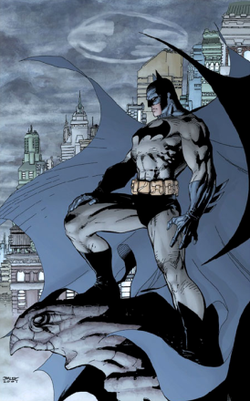

Batman
| Batman | |
|---|---|
|  | |
| Publication information | |
| Publisher | DC Comics |
| First appearance | Detective Comics #27 (May 1939) |
| Created by | Bill Finger[1] (developer) Bob Kane (concept) |
| In-story information | |
| Alter ego | Bruce Wayne |
| Team affiliations | Batman Family Justice League Outsiders Batmen of All Nations Batman Incorporated |
| Partnerships | Robin (various) Batgirl (various) James "Jim" Gordon Catwoman Superman |
| Notable aliases | Matches Malone,[2] Sir Hemingford Grey, Mordecai Wayne, The Insider, Lefty Knox,[3] Minuteman[4] |
| Abilities |
|
{kind=link}
Batman is a fictional superhero appearing in American comic books published by DC Comics. The character was created by artist Bob Kane and writer Bill Finger,[5] and first appeared in Detective Comics #27 (May 1939). Originally named "the Bat-Man", the character is also referred to by such epithets as the "Caped Crusader",[6] the "Dark Knight",[6] and the "World's Greatest Detective".[6]
Batman's secret identity is Bruce Wayne, an American billionaire, playboy, philanthropist, and capitalist. He is the owner and chairman of Wayne Enterprises. Having witnessed the murder of his parents as a child, he swore revenge on criminals, an oath tempered with a sense of justice. Wayne trains himself both physically and intellectually and crafts a bat-inspired persona to fight crime.[7] Batman operates in the fictional Gotham City and is assisted by various supporting characters, including his butler Alfred, the police commissioner Jim Gordon, and vigilante allies such as Robin. Unlike most superheroes, Batman does not possess any superpowers; he makes use of his genius intellect, physical prowess, martial arts skills, detective skills, science and technology, vast wealth, provocation of fear and intimidation, and an indomitable will in his continuous war on crime. A large assortment of villains make up Batman's rogues gallery, including his archenemy the Joker.
Batman became popular soon after his introduction and gained his own comic book title, Batman, in 1940. As the decades progressed, differing interpretations of the character emerged. The late 1960s Batman television series used a camp aesthetic which continued to be associated with the character for years after the show ended. Various creators worked to return the character to his dark roots, culminating in 1986 with The Dark Knight Returns by Frank Miller. The success of Warner Bros.' live-action Batman feature films have helped maintain public interest in the character.[8]
An American cultural icon, Batman has been licensed and adapted into a variety of media, from radio to television and film, and appears on a variety of merchandise sold all over the world, such as toys and video games. The character has also intrigued psychiatrists with many trying to understand the character's psyche. In May 2011, Batman placed second on IGN's Top 100 Comic Book Heroes of All Time,[9] after Superman. Empire magazine listed him second in their 50 Greatest Comic Book Characters of All Time. The character has been portrayed on both film and television by Lewis Wilson, Robert Lowery, Adam West, Michael Keaton, Val Kilmer, George Clooney, Christian Bale, David Mazouz, and soon by Ben Affleck.
Contents
[hide]Publication history
Creation
In early 1939, the success of Superman in Action Comics prompted editors at the comic book division of National Publications (the future DC Comics) to request more superheroes for its titles. In response, Bob Kane created "the Bat-Man".[10] Collaborator Bill Finger recalled "Kane had an idea for a character called 'Batman', and he'd like me to see the drawings. I went over to Kane's, and he had drawn a character who looked very much like Superman with kind of ... reddish tights, I believe, with boots ... no gloves, no gauntlets ... with a small domino mask, swinging on a rope. He had two stiff wings that were sticking out, looking like bat wings. And under it was a big sign ... BATMAN."[11] The bat-wing-like cape was suggested by Bob Kane, who was inspired by seeing Leonardo Da Vinci's sketch of an ornithopter flying device as a child.[12]
{kind=link}
Finger offered such suggestions as giving the character a cowl instead of a simple domino mask, a cape instead of wings, and gloves, and removing the red sections from the original costume.[14][15][16][17] Finger said he devised the name Bruce Wayne for the character's secret identity: "Bruce Wayne's first name came from Robert Bruce, the Scottish patriot, Chief of the Knights Templar. Bruce, being a playboy, was a man of gentry. I searched for a name that would suggest colonialism. I tried Adams, Hancock ... then I thought of Mad Anthony Wayne."[18] He later said his suggestions were influenced by Lee Falk's popular The Phantom, a syndicated newspaper comic-strip character with which Kane was familiar as well.[19]
Kane and Finger drew upon contemporary 1930s popular culture for inspiration regarding much of the Bat-Man's look, personality, methods and weaponry. Details find predecessors in pulp fiction, comic strips, newspaper headlines, and autobiographical details referring to Kane himself.[20] As an aristocratic hero with a double identity, the Bat-Man had predecessors in the Scarlet Pimpernel (created by Baroness Emmuska Orczy, 1903) and Zorro (created by Johnston McCulley, 1919). Like them, he performed his heroic deeds in secret, averted suspicion by playing the fool in public, and marked his work with a signature symbol. Kane specifically noted the influence of the films The Mark of Zorro (1920) and The Bat Whispers (1930) in the creation of the character's iconography. Finger, drawing inspiration from pulp heroes like Doc Savage, The Shadow, Dick Tracy, and Sherlock Holmes, made the character a master sleuth.[21][22]
In his 1989 autobiography, Kane detailed Finger's contributions to Batman's creation:
One day I called Bill and said, 'I have a new character called the Bat-Man and I've made some crude, elementary sketches I'd like you to look at.' He came over and I showed him the drawings. At the time, I only had a small domino mask, like the one Robin later wore, on Batman's face. Bill said, 'Why not make him look more like a bat and put a hood on him, and take the eyeballs out and just put slits for eyes to make him look more mysterious?' At this point, the Bat-Man wore a red union suit; the wings, trunks, and mask were black. I thought that red and black would be a good combination. Bill said that the costume was too bright: 'Color it dark gray to make it look more ominous.' The cape looked like two stiff bat wings attached to his arms. As Bill and I talked, we realized that these wings would get cumbersome when Bat-Man was in action, and changed them into a cape, scalloped to look like bat wings when he was fighting or swinging down on a rope. Also, he didn't have any gloves on, and we added them so that he wouldn't leave fingerprints.[19]
Subsequent creation credit
Kane signed away ownership in the character in exchange for, among other compensation, a mandatory byline on all Batman comics. This byline did not originally say "Batman created by Bob Kane"; his name was simply written on the title page of each story. The name disappeared from the comic book in the mid-1960s, replaced by credits for each story's actual writer and artists. In the late 1970s, when Jerry Siegel and Joe Shuster began receiving a "created by" credit on the Superman titles, along with William Moulton Marston being given the byline for creating Wonder Woman, Batman stories began saying "Created by Bob Kane" in addition to the other credits.
Finger did not receive the same recognition. While he had received credit for other DC work since the 1940s, he began, in the 1960s, to receive limited acknowledgment for his Batman writing; in the letters page of Batman #169 (February 1965) for example, editor Julius Schwartz names him as the creator of the Riddler, one of Batman's recurring villains. However, Finger's contract left him only with his writing page rate and no byline. Kane wrote, "Bill was disheartened by the lack of major accomplishments in his career. He felt that he had not used his creative potential to its fullest and that success had passed him by."[18] At the time of Finger's death in 1974, DC had not officially credited Finger as Batman co-creator.
Jerry Robinson, who also worked with Finger and Kane on the strip at this time, has criticized Kane for failing to share the credit. He recalled Finger resenting his position, stating in a 2005 interview with The Comics Journal:
Bob made him more insecure, because while he slaved working on Batman, he wasn't sharing in any of the glory or the money that Bob began to make, which is why... [he was] going to leave [Kane's employ]. ... [Kane] should have credited Bill as co-creator, because I know; I was there. ... That was one thing I would never forgive Bob for, was not to take care of Bill or recognize his vital role in the creation of Batman. As with Siegel and Shuster, it should have been the same, the same co-creator credit in the strip, writer, and artist.[23]
Although Kane initially rebutted Finger's claims at having created the character, writing in a 1965 open letter to fans that "it seemed to me that Bill Finger has given out the impression that he and not myself created the ''Batman, t' [sic] as well as Robin and all the other leading villains and characters. This statement is fraudulent and entirely untrue." Kane himself also commented on Finger's lack of credit. "The trouble with being a 'ghost' writer or artist is that you must remain rather anonymously without 'credit'. However, if one wants the 'credit', then one has to cease being a 'ghost' or follower and become a leader or innovator."[24]
In 1989, Kane revisited Finger's situation, recalling in an interview,
In those days it was like, one artist and he had his name over it [the comic strip] â the policy of DC in the comic books was, if you can't write it, obtain other writers, but their names would never appear on the comic book in the finished version. So Bill never asked me for it [the byline] and I never volunteered â I guess my ego at that time. And I felt badly, really, when he [Finger] died.[25]
In September 2015, DC Entertainment revealed that Finger would be receiving credit for his role in Batman's creation, starting with the 2016 superhero film Batman v Superman: Dawn of Justice, after a deal was worked out with the writer's family.[26]
Early years
{kind=link}
The first Batman story, "The Case of the Chemical Syndicate", was published in Detective Comics #27 (May 1939). Finger said, "Batman was originally written in the style of the pulps",[27] and this influence was evident with Batman showing little remorse over killing or maiming criminals. Batman proved a hit character, and he received his own solo title in 1940, while continuing to star in Detective Comics. By that time, National was the top-selling and most influential publisher in the industry; Batman and the company's other major hero, Superman, were the cornerstones of the company's success.[28] The two characters were featured side-by-side as the stars of World's Finest Comics, which was originally titled World's Best Comics when it debuted in fall 1940. Creators including Jerry Robinson and Dick Sprang also worked on the strips during this period.
Over the course of the first few Batman strips elements were added to the character and the artistic depiction of Batman evolved. Kane noted that within six issues he drew the character's jawline more pronounced, and lengthened the ears on the costume. "About a year later he was almost the full figure, my mature Batman", Kane said.[29] Batman's characteristic utility belt was introduced in Detective Comics #29 (July 1939), followed by the boomerang-like batarang and the first bat-themed vehicle, the Batplane, in #31 (Sept. 1939). The character's origin was revealed in #33 (Nov. 1939), unfolding in a two-page story that establishes the brooding persona of Batman, a character driven by the death of his parents. Written by Finger, it depicts a young Bruce Wayne witnessing his parents' murder at the hands of a mugger. Days later, at their grave, the child vows that "by the spirits of my parents [I will] avenge their deaths by spending the rest of my life warring on all criminals".[30][31][32]
The early, pulp-inflected portrayal of Batman started to soften in Detective Comics #38 (April 1940) with the introduction of Robin, Batman's junior counterpart.[33] Robin was introduced, based on Finger's suggestion, because Batman needed a "Watson" with whom Batman could talk.[34] Sales nearly doubled, despite Kane's preference for a solo Batman, and it sparked a proliferation of "kid sidekicks".[35] The first issue of the solo spin-off series Batman was notable not only for introducing two of his most persistent enemies, the Joker and Catwoman, but for a story in which Batman shoots some monstrous giants to death. That story prompted editor Whitney Ellsworth to decree that the character could no longer kill or use a gun.[36]
By 1942, the writers and artists behind the Batman comics had established most of the basic elements of the Batman mythos.[37] In the years following World War II, DC Comics "adopted a postwar editorial direction that increasingly de-emphasized social commentary in favor of lighthearted juvenile fantasy". The impact of this editorial approach was evident in Batman comics of the postwar period; removed from the "bleak and menacing world" of the strips of the early 1940s, Batman was instead portrayed as a respectable citizen and paternal figure that inhabited a "bright and colorful" environment.[38]
1950s and early 1960s
Batman was one of the few superhero characters to be continuously published as interest in the genre waned during the 1950s. In the story "The Mightiest Team in the World" in Superman #76 (June 1952), Batman teams up with Superman for the first time and the pair discovers each other's secret identity.[39] Following the success of this story, World's Finest Comics was revamped so it featured stories starring both heroes together, instead of the separate Batman and Superman features that had been running before.[40] The team-up of the characters was "a financial success in an era when those were few and far between";[41] this series of stories ran until the book's cancellation in 1986.
Batman comics were among those criticized when the comic book industry came under scrutiny with the publication of psychologist Fredric Wertham's book Seduction of the Innocent in 1954. Wertham's thesis was that children imitated crimes committed in comic books, and that these works corrupted the morals of the youth. Wertham criticized Batman comics for their supposed homosexual overtones and argued that Batman and Robin were portrayed as lovers.[42] Wertham's criticisms raised a public outcry during the 1950s, eventually leading to the establishment of the Comics Code Authority, a code that is no longer in use by the comic book industry. The tendency towards a "sunnier Batman" in the postwar years intensified after the introduction of the Comics Code.[43] Scholars have suggested that the characters of Batwoman (in 1956) and the pre-Barbara Gordon Bat-Girl (in 1961) were introduced in part to refute the allegation that Batman and Robin were gay, and the stories took on a campier, lighter feel.[44]
In the late 1950s, Batman stories gradually became more science fiction-oriented, an attempt at mimicking the success of other DC characters that had dabbled in the genre.[45] New characters such as Batwoman, Ace the Bat-Hound, and Bat-Mite were introduced. Batman's adventures often involved odd transformations or bizarre space aliens. In 1960, Batman debuted as a member of the Justice League of America in The Brave and the Bold #28 (Feb. 1960), and went on to appear in several Justice League comic series starting later that same year.
"New Look" Batman and camp
By 1964, sales on Batman titles had fallen drastically. Bob Kane noted that, as a result, DC was "planning to kill Batman off altogether".[46] In response to this, editor Julius Schwartz was assigned to the Batman titles. He presided over drastic changes, beginning with 1964's Detective Comics #327 (May 1964), which was cover-billed as the "New Look". Schwartz introduced changes designed to make Batman more contemporary, and to return him to more detective-oriented stories. He brought in artist Carmine Infantino to help overhaul the character. The Batmobile was redesigned, and Batman's costume was modified to incorporate a yellow ellipse behind the bat-insignia. The space aliens, time travel, and characters of the 1950s such as Batwoman, Ace, and Bat-Mite were retired. Batman's butler Alfred was killed off (though his death was quickly reversed) while a new female relative for the Wayne family, Aunt Harriet, came to live with Bruce Wayne and Dick Grayson.[47]
The debut of the Batman television series in 1966 had a profound influence on the character. The success of the series increased sales throughout the comic book industry, and Batman reached a circulation of close to 900,000 copies.[48] Elements such as the character of Batgirl and the show's campy nature were introduced into the comics; the series also initiated the return of Alfred. Although both the comics and TV show were successful for a time, the camp approach eventually wore thin and the show was canceled in 1968. In the aftermath, the Batman comics themselves lost popularity once again. As Julius Schwartz noted, "When the television show was a success, I was asked to be campy, and of course when the show faded, so did the comic books."[49]
Starting in 1969, writer Dennis O'Neil and artist Neal Adams made a deliberate effort to distance Batman from the campy portrayal of the 1960s TV series and to return the character to his roots as a "grim avenger of the night".[50] O'Neil said his idea was "simply to take it back to where it started. I went to the DC library and read some of the early stories. I tried to get a sense of what Kane and Finger were after."[51]
O'Neil and Adams first collaborated on the story "The Secret of the Waiting Graves" (Detective Comics #395, January 1970). Few stories were true collaborations between O'Neil, Adams, Schwartz, and inker Dick Giordano, and in actuality these men were mixed and matched with various other creators during the 1970s; nevertheless the influence of their work was "tremendous".[52] Giordano said: "We went back to a grimmer, darker Batman, and I think that's why these stories did so well..."[53] While the work of O'Neil and Adams was popular with fans, the acclaim did little to improve declining sales; the same held true with a similarly acclaimed run by writer Steve Englehart and penciler Marshall Rogers in Detective Comics #471â476 (August 1977 â April 1978), which went on to influence the 1989 movie Batman and be adapted for Batman: The Animated Series, which debuted in 1992.[54] Regardless, circulation continued to drop through the 1970s and 1980s, hitting an all-time low in 1985.[55]
The Dark Knight Returns
Frank Miller's limited series The Dark Knight Returns (FebruaryâJune 1986), which tells the story of a 55-year-old Batman coming out of retirement in a possible future, reinvigorated the character. The Dark Knight Returns was a financial success and has since become one of the medium's most noted touchstones.[56] The series also sparked a major resurgence in the character's popularity.[57]
That year Dennis O'Neil took over as editor of the Batman titles and set the template for the portrayal of Batman following DC's status quo-altering miniseries Crisis on Infinite Earths. O'Neil operated under the assumption that he was hired to revamp the character and as a result tried to instill a different tone in the books than had gone before.[58] One outcome of this new approach was the "Year One" storyline in Batman #404â407 (FebruaryâMay 1987), in which Frank Miller and artist David Mazzucchelli redefined the character's origins. Writer Alan Moore and artist Brian Bolland continued this dark trend with 1988's 48-page one-shot Batman: The Killing Joke, in which the Joker, attempting to drive Commissioner Gordon insane, cripples Gordon's daughter Barbara, and then kidnaps and tortures the commissioner, physically and psychologically.
{kind=link}
The Batman comics garnered major attention in 1988 when DC Comics created a 900 number for readers to call to vote on whether Jason Todd, the second Robin, lived or died. Voters decided in favor of Jason's death by a narrow margin of 28 votes (see Batman: A Death in the Family).[59] The following year saw the release of Tim Burton's Batman feature film, which firmly brought the character back to the public's attention, grossing millions of dollars at the box office, and millions more in merchandising. However, the three sequels, Tim Burton's Batman Returns and director Joel Schumacher's Batman Forever and Batman & Robin, did not perform as well at the box office. The fourth film in the series, the Schumacher-directed Batman & Robin, meanwhile, was a critical and commercial failure. The Batman movie franchise was rebooted with director and co-writer Christopher Nolan's Batman Begins in 2005, The Dark Knight in 2008 and The Dark Knight Rises in 2012. In 1989, the first issue of Legends of the Dark Knight, the first new solo Batman title in nearly 50 years, sold close to a million copies.[60]
The 1993 "Knightfall" story arc introduced a new villain, Bane, who critically injures Batman. Jean-Paul Valley, known as Azrael, is called upon to wear the Batsuit during Bruce Wayne's convalescence. Writers Doug Moench, Chuck Dixon, and Alan Grant worked on the Batman titles during "Knightfall", and would also contribute to other Batman crossovers throughout the 1990s. 1998's "Cataclysm" storyline served as the precursor to 1999's "No Man's Land", a year-long storyline that ran through all the Batman-related titles dealing with the effects of an earthquake-ravaged Gotham City. At the conclusion of "No Man's Land", O'Neil stepped down as editor and was replaced by Bob Schreck.
Another writer who rose to prominence on the Batman comic series, was Jeph Loeb. Along with longtime collaborator Tim Sale, they wrote two miniseries ("The Long Halloween" and "Dark Victory") that pit an early in his career version of Batman against his entire rogue's gallery (most notably Two-Face, whose origin was re-envisioned by Loeb) while dealing with various mysteries involving serial killers Holiday and the Hangman. In 2003, Loeb teamed with artist Jim Lee to work on another mystery arc: "Batman: Hush" for the main Batman book. The twelveâissue storyline has Batman and Catwoman teaming up against Batman's entire rogue's gallery, including an apparently resurrected Jason Todd, while seeking to find the identity of the mysterious supervillain Hush. While the character of Hush failed to catch on with readers, the arc was a sales success for DC. As the storyline was Jim Lee's first regular comic book work in nearly a decade, the series became #1 on the Diamond Comic Distributors sales chart for the first time since Batman #500 (October 1993) and Jason Todd's appearance laid the groundwork for writer Judd Winick's subsequent run as writer on Batman, with another multi-issue epic, "Under the Hood", which ran from Batman #637â650.
In 2005, DC launched All-Star Batman and Robin, a stand-alone comic series set outside the existing DC Universe. Written by Frank Miller and drawn by Jim Lee, the series was a commercial success for DC Comics[61][62] though widely panned by critics for its writing and strong depictions of violence.[63][64]
Starting in 2006, the regular writers on Batman and Detective Comics were Grant Morrison and Paul Dini, with Grant Morrison reincorporating controversial elements of Batman lore (most notably, the science fiction themed storylines of the 1950s Batman comics, which Morrison revised as hallucinations Batman suffered under the influence of various mind-bending gases and extensive sensory deprivation training) into the character. Morrison's run climaxed with "Batman R.I.P.", which brought Batman up against the villainous "Black Glove" organization, which sought to drive Batman into madness. "Batman R.I.P." segued into Final Crisis (also written by Morrison), which saw the apparent death of Batman at the hands of Darkseid. In the 2009 miniseries Batman: Battle for the Cowl, Wayne's former protégé Dick Grayson becomes the new Batman, and Wayne's son Damian becomes the new Robin.[65][66] In June 2009, Judd Winick returned to writing Batman, while Grant Morrison was given his own series, titled Batman and Robin.[67]
In 2010, the storyline Batman: The Return of Bruce Wayne saw Bruce travel through history, eventually returning to the present day. Although he reclaimed the mantle of Batman, he also allowed Grayson to continue being Batman as well. Bruce decided to take his war on crime globally, which is the central focus of Batman Incorporated. DC Comics would later announce that Grayson would be the main character in Batman, Detective Comics and Batman and Robin, while Wayne would be the main character in Batman Incorporated. Also, Bruce appeared in another ongoing series, Batman: The Dark Knight.
The New 52
In September 2011, DC Comics' entire line of superhero books, including its Batman franchise, was canceled and relaunched with new #1 issues as part of The New 52 reboot. Bruce Wayne is the only character to be identified as Batman and is featured in Batman, Detective Comics, Batman and Robin, and Batman: The Dark Knight. Dick Grayson returns to the mantle of Nightwing and appears in his own ongoing series. While many characters have their histories significantly altered to attract newer, younger readers, Batman's history remains mostly intact. Batman Incorporated was relaunched in 2012-2013 to complete the "Leviathan" storyline.
Since the beginning of The New 52, Scott Snyder has been the writer of the flagship Batman title. His first major story arc was "Night of the Owls", where Batman confronts the Court of Owls, a secret society that has controlled Gotham for centuries. The second story arc was "Death of the Family", where the Joker returns to Gotham and simultaneously attacks each member of the Batman family. The third story arc was "Batman: Zero Year", which redefined Batman's origin in The New 52. It followed Batman #0, published in June 2012, which explored the character's early years. The final storyline before the Convergence (2015) event was Endgame, depicting the supposed final battle between Batman and the Joker when he unleashes the deadly Endgame virus onto Gotham City. The storyline ends with Batman and the Joker's supposed deaths. Starting with #41, Commissioner James Gordon takes over Bruce's mantle as a new, state-sanctioned, mecha Batman, debuting in the Free Comic Book Day special comic Divergence.
Fictional character biography
{kind=link}
Batman's history has undergone various revisions, both minor and major. Few elements of the character's history have remained constant. Scholars William Uricchio and Roberta E. Pearson noted in the early 1990s, "Unlike some fictional characters, the Batman has no primary urtext set in a specific period, but has rather existed in a plethora of equally valid texts constantly appearing over more than five decades."[68]
The central fixed event in the Batman stories is the character's origin story.[69] As a little boy, Bruce Wayne is horrified and traumatized to see his parents, the physician Dr. Thomas Wayne and his wife Martha, being murdered by a mugger in front of his very eyes. This drives him to fight crime in Gotham City as Batman. Pearson and Uricchio also noted beyond the origin story and such events as the introduction of Robin, "Until recently, the fixed and accruing and hence, canonized, events have been few in number",[69] a situation altered by an increased effort by later Batman editors such as Dennis O'Neil to ensure consistency and continuity between stories.[70]
Golden Age
In Batman's first appearance in Detective Comics #27, he is already operating as a crime-fighter.[71] Batman's origin is first presented in Detective Comics #33 (November 1939) and is later expanded upon in Batman #47. As these comics state, Bruce Wayne is born to Dr. Thomas Wayne and his wife Martha, two very wealthy and charitable Gotham City socialites. Bruce is brought up in Wayne Manor, and leads a happy and privileged existence until the age of eight, when his parents are killed by a small-time criminal named Joe Chill while on their way home from a movie theater. That night, Bruce Wayne swears an oath to spend his life fighting crime. He engages in intense intellectual and physical training; however, he realizes that these skills alone would not be enough. "Criminals are a superstitious cowardly lot", Wayne remarks, "so my disguise must be able to strike terror into their hearts. I must be a creature of the night, black, terrible..." As if responding to his desires, a bat suddenly flies through the window, inspiring Bruce to take on the persona of Batman.[72]
In early strips, Batman's career as a vigilante earns him the ire of the police. During this period, Bruce Wayne has a fiancée named Julie Madison.[73] In Batman #1 takes in an orphaned circus acrobat, Dick Grayson, who becomes his junior counterpart, Robin. Batman also becomes a founding member of the Justice Society of America,[74] although he, like Superman, is an honorary member,[75] and thus only participates occasionally. Batman's relationship with the law thaws quickly, and he is made an honorary member of Gotham City's police department.[76] During this time, Alfred Pennyworth arrives at Wayne Manor, and after deducing the Dynamic Duo's secret identities, joins their service as their butler.[77]
Silver Age
The Silver Age of Comic Books in DC Comics is sometimes held to have begun in 1956 when the publisher introduced Barry Allen as a new, updated version of The Flash. Batman is not significantly changed by the late 1950s for the continuity which would be later referred to as Earth-One. The lighter tone Batman had taken in the period between the Golden and Silver Ages led to the stories of the late 1950s and early 1960s that often feature many science-fiction elements, and Batman is not significantly updated in the manner of other characters until Detective Comics #327 (May 1964), in which Batman reverts to his detective roots, with most science-fiction elements jettisoned from the series.
After the introduction of DC Comics' multiverse in the 1960s, DC established that stories from the Golden Age star the Earth-Two Batman, a character from a parallel world. This version of Batman partners with and marries the reformed Earth-Two Catwoman, Selina Kyle (as shown in Superman Family #211). They have a daughter, Helena Wayne, who as the Huntress, becomes (along with Dick Grayson, the Earth-Two Robin) Gotham's protector once Wayne retires from the position to become police commissioner, a position he occupies until he is killed during one final adventure as Batman. Batman titles however often ignored that a distinction had been made between the pre-revamp and post-revamp Batmen (since unlike The Flash or Green Lantern, Batman comics had been published without interruption through the 1950s) and would occasionally make reference to stories from the Golden Age.[78] Nevertheless, details of Batman's history were altered or expanded upon through the decades. Additions include meetings with a future Superman during his youth, his upbringing by his uncle Philip Wayne (introduced in Batman #208, January/February 1969) after his parents' death, and appearances of his father and himself as prototypical versions of Batman and Robin, respectively.[79][80] In 1980 then-editor Paul Levitz commissioned the Untold Legend of the Batman limited series to thoroughly chronicle Batman's origin and history.
Batman meets and regularly works with other heroes during the Silver Age, most notably Superman, whom he began regularly working alongside in a series of team-ups in World's Finest Comics, starting in 1954 and continuing through the series' cancellation in 1986. Batman and Superman are usually depicted as close friends. As a founding member of the Justice League of America, Batman appears in its first story, in 1960's Brave and the Bold #28. In the 1970s and 1980s, Brave and the Bold became a Batman title, in which Batman teams up with a different DC Universe superhero each month.
In 1969, Dick Grayson attends college as part of DC Comics' effort to revise the Batman comics. Additionally, Batman also moves from his mansion, Wayne Manor into a penthouse apartment atop the Wayne Foundation building in downtown Gotham City, in order to be closer to Gotham City's crime. Batman spends the 1970s and early 1980s mainly working solo, with occasional team-ups with Robin and/or Batgirl. Batman's adventures also become somewhat darker and more grim during this period, depicting increasingly violent crimes, including the first appearance (since the early Golden Age) of the Joker as a homicidal psychopath, and the arrival of Ra's al Ghul, a centuries-old terrorist who knows Batman's secret identity. In the 1980s, Dick Grayson becomes Nightwing.[7]
In the final issue of Brave and the Bold in 1983, Batman quits the Justice League and forms a new group called the Outsiders. He serves as the team's leader until Batman and the Outsiders #32 (1986) and the comic subsequently changed its title.
Modern Age
After the 12-issue limited series Crisis on Infinite Earths, DC Comics retconned the histories of some major characters in an attempt at updating them for contemporary audiences. Frank Miller retold Batman's origin in the storyline "Year One" from Batman #404â407, which emphasizes a grittier tone in the character.[81] Though the Earth-Two Batman is erased from history, many stories of Batman's Silver Age/Earth-One career (along with an amount of Golden Age ones) remain canonical in the post-Crisis universe, with his origins remaining the same in essence, despite alteration. For example, Gotham's police are mostly corrupt, setting up further need for Batman's existence. The guardian Phillip Wayne is removed leaving young Bruce to be raised by Alfred Pennyworth. Additionally, Batman is no longer a founding member of the Justice League of America, although he becomes leader for a short time of a new incarnation of the team launched in 1987. To help fill in the revised backstory for Batman following Crisis, DC launched a new Batman title called Legends of the Dark Knight in 1989 and has published various miniseries and one-shot stories since then that largely take place during the "Year One" period.
Subsequently, Batman begins exhibiting an excessive, reckless approach to his crime-fighting, a result of the pain of losing Jason Todd. Batman works solo until the decade's close, when Tim Drake becomes the new Robin.[82]
Many of the major Batman storylines since the 1990s have been inter-title crossovers that run for a number of issues. In 1993, DC published "Knightfall". During the storyline's first phase, the new villain Bane paralyzes Batman, leading Wayne to ask Azrael to take on the role. After the end of "Knightfall", the storylines split in two directions, following both the Azrael-Batman's adventures, and Bruce Wayne's quest to become Batman once more. The story arcs realign in "KnightsEnd", as Azrael becomes increasingly violent and is defeated by a healed Bruce Wayne. Wayne hands the Batman mantle to Dick Grayson (then Nightwing) for an interim period, while Wayne trains for a return to the role.[83]
The 1994 company-wide crossover storyline "Zero Hour" changes aspects of DC continuity again, including those of Batman. Noteworthy among these changes is that the general populace and the criminal element now considers Batman an urban legend rather than a known force.
Batman once again becomes a member of the Justice League during Grant Morrison's 1996 relaunch of the series, titled JLA. During this time, Gotham City faces catastrophe in the decade's closing crossover arc. In 1998's "Cataclysm" storyline, Gotham City is devastated by an earthquake and ultimately cut off from the United States. Deprived of many of his technological resources, Batman fights to reclaim the city from legions of gangs during 1999's "No Man's Land".
Meanwhile, Batman's relationship with the Gotham City Police Department changed for the worse with the events of "Batman: Officer Down" and "Batman: War Games/War Crimes"; Batman's long-time law enforcement allies Commissioner Gordon and Harvey Bullock are forced out of the police department in "Officer Down", while "War Games" and "War Crimes" saw Batman become a wanted fugitive after a contingency plan of his to neutralize Gotham City's criminal underworld is accidentally triggered, resulting in a massive gang war that ends with the sadistic Black Mask the undisputed ruler of the city's criminal gangs. Lex Luthor arranges for the murder of Batman's on-again, off-again love interest Vesper (introduced in the mid-1990s) during the "Bruce Wayne: Murderer?" and "Bruce Wayne: Fugitive" story arcs. Though Batman is able to clear his name, he loses another ally in the form of his new bodyguard Sasha, who is recruited into the organization known as "Checkmate" while stuck in prison due to her refusal to turn state's evidence against her employer. While he was unable to prove that Luthor was behind the murder of Vesper, Batman does get his revenge with help from Talia al Ghul in Superman/Batman #1â6.
DC's 2005 limited series Identity Crisis reveals that JLA member Zatanna had altered Batman's memories to prevent him from stopping the League from lobotomizing Dr. Light after he sexually assaulted Sue Dibny. Batman later creates the Brother I satellite surveillance system to watch over and if necessary, kill the other heroes. The revelation of Batman's creation and his tacit responsibility for Blue Beetle's death becomes a driving force in the lead-up to the Infinite Crisis miniseries, which again restructures DC continuity. Batman and a team of superheroes destroy Brother Eye and the OMACs, though at the very end Batman reaches his apparent breaking point when Alexander Luthor Jr. seriously wounds Nightwing. Picking up a gun, Batman nearly shoots Luthor in order to avenge his former sidekick, until Wonder Woman convinces him to not pull the trigger.
Following Infinite Crisis, Bruce Wayne, Dick Grayson (having recovered from his wounds), and Tim Drake retrace the steps Bruce had taken when he originally left Gotham City, to "rebuild Batman".[84] In the Face the Face storyline, Batman and Robin return to Gotham City after their year-long absence. Part of this absence is captured during Week 30 of the 52 series, which shows Batman fighting his inner demons.[85] Later on in 52, Batman is shown undergoing an intense meditation ritual in Nanda Parbat. This becomes an important part of the regular Batman title, which reveals that Batman is reborn as a more effective crime fighter while undergoing this ritual, having "hunted down and ate" the last traces of fear in his mind.[86][87] At the end of the "Face the Face" story arc, Bruce officially adopts Tim (who had lost both of his parents at various points in the character's history) as his son.[88] The follow-up story arc in Batman, Batman and Son, introduces Damian Wayne, who is Batman's son with Talia al Ghul. Although originally in Son of the Demon, Bruce's coupling with Talia was implied to be consensual, this arc ret-conned it into Talia forcing herself on Bruce.[89]
Batman, along with Superman and Wonder Woman, reforms the Justice League in the new Justice League of America series,[90] and is leading the newest incarnation of the Outsiders.[91]
Grant Morrison's 2008 storyline, "Batman R.I.P." featured Batman being physically and mentally broken by the enigmatic villain Doctor Hurt and attracted news coverage in advance of its highly promoted conclusion, which would speculated to feature the death of Bruce Wayne.[92][93] However, though Batman is shown to possibly perish at the end of the arc, the two-issue arc "Last Rites", which leads into the crossover storylines "Final Crisis", shows that Batman survives his helicopter crash into the Gotham City River and returns to the Batcave, only to be summoned to the Hall of Justice by the JLA to help investigate the New God Orion's death. The story ends with Batman retrieving the god-killing bullet used to kill Orion, setting up its use in "Final Crisis".[94] In the pages of Final Crisis Batman is reduced to a charred skeleton.[95] In Final Crisis #7 Wayne is shown witnessing the passing of the first man, Anthro.[96][97] Wayne's "death" sets up the three-issue Battle for the Cowl miniseries in which Wayne's ex-proteges compete for the "right" to assume the role of Batman, which concludes with Grayson becoming Batman,[98] while Tim Drake takes on the identity of Red Robin.[99] Dick and Damian continue as Batman and Robin, and in the crossover storyline "Blackest Night", what appears to be Bruce's corpse is reanimated as a Black Lantern zombie,[100] but is later shown that Bruce's corpse is one of Darkseid's failed Batman clones. Dick and Batman's other friends conclude that Bruce is alive.[101][102]
Bruce subsequently returns in Morrison's miniseries Batman: The Return of Bruce Wayne, which depicts his travels through time from prehistory to present-day Gotham.[103][103][104][105] Bruce's return sets up Batman Incorporated, an ongoing series which focuses on Wayne franchising the Batman identity across the globe, allowing Dick and Damian to continue as Gotham's Dynamic Duo. Bruce publicly announces that Wayne Enterprises will aid Batman on his mission, known as "Batman, Incorporated". Due to rebooted continuity that occurred as part of DC's 2011 relaunch of all of its book, The New 52, however, Grayson is restored as Nightwing with Wayne serving as the sole Batman once again. The relaunch also interrupts the publication of Batman, Incorporated, which resumed its story in 2012-2013 with changes to suit the new status quo.
Personality
Batman's primary character traits can be summarized as "wealth; physical prowess; deductive abilities and obsession".[69] The details and tone of Batman comic books have varied over the years due to different creative teams. Dennis O'Neil noted that character consistency was not a major concern during early editorial regimes: "Julie Schwartz did a Batman in Batman and Detective and Murray Boltinoff did a Batman in the Brave and the Bold and apart from the costume they bore very little resemblance to each other. Julie and Murray did not want to coordinate their efforts, nor were they asked to do so. Continuity was not important in those days."[106]
The driving force behind Batman's character is his parents' murder and the absence of the father. Bob Kane and Bill Finger discussed Batman's background and decided that "there's nothing more traumatic than having your parents murdered before your eyes".[107] Despite his trauma, he sets his mind on studying to become a scientist[108][109] and to train his body into physical perfection[108][109] to fight crime in Gotham City as Batman, an inspired idea from Wayne's insight into the criminal mind.[108][109]
Another of Batman's characterizations is a vigilante; in order to stop evil that started with the death of his parents, he must sometimes break laws himself. Although manifested differently by being re-told by different artists, it is nevertheless that the details and the prime components of Batman's origin have never varied at all in the comic books, the "reiteration of the basic origin events holds together otherwise divergent expressions".[110] The origin is the source of the character's traits and attributes, which play out in many of the character's adventures.[69]
Batman is often treated as a vigilante by other characters in his stories. Frank Miller views the character as "a dionysian figure, a force for anarchy that imposes an individual order".[111] Dressed as a bat, Batman deliberately cultivates a frightening persona in order to aid him in crime-fighting,[112] a fear that originates from the criminals' own guilty conscience.[113] Miller is often credited with reintroducing anti-heroic traits into Batman's characterization,[114] such as his brooding personality, willingness to use violence and torture, and increasingly alienated behavior. Batman's original character was changed when comic book codes went into place and DC editor Whitney Ellsworth reinvented Batman as having a stringent moral code which never allowed him to kill.[114] Miller's Batman was closer to the original, Golden Age version, who was willing to kill criminals.[115]
Bruce Wayne
The Batman is, in his everyday identity, Bruce Wayne, a wealthy American business magnate living in Gotham City. Wayne averts suspicion by acting the part of a superficial, dim-witted playboy idly living off his family's fortune (amassed through investment in real estate before the city became a bustling metropolis)[116] and the profits of Wayne Enterprises, his inherited conglomerate.[117] He supports philanthropic causes through his nonprofit Wayne Foundation, but is more widely known as a celebrity socialite.[118] In public, he pretends to be a heavy drinker, using ginger ale to suggest champagne and liberally serving alcohol to guests that he never actually consumes himself. In reality, he is a strict teetotaler concerned to maintain top physical fitness and mental acuity. In public, he appears frequently in the company of fashionable women to encourage tabloid gossip. In reality, there is less than meets the eye: though he leads an active romantic life, crime-fighting accounts for most of his night hours.[119]
Bruce Wayne's calculated persona as a vapid, self-indulgent son of privilege finds literary precedent in Sir Percival Blakeney, hero of The Scarlet Pimpernel stories by Baroness Emmuska Orczy (1903), and Don Diego de la Vega, hero of the Zorro tales by Johnston McCulley (1919). Like Bruce Wayne, Sir Percy and Don Diego are each members of gentry who invite contempt by publicly playing the fool. Also, like Bruce Wayne, each performs heroic deeds in secret and marks his work with a signature symbol.
The name "Bruce Wayne" was chosen for certain connotations. According to co-creator Bill Finger, "Bruce Wayne's first name came from Robert Bruce, the Scottish patriot. Wayne, being a playboy, was a man of gentry. I searched for a name that would suggest colonialism. I tried Adams, Hancock...then I thought of Mad Anthony Wayne."[120]
Writers of Batman and Superman stories have often compared and contrasted the two. Interpretations vary depending on the writer, the story, and the timing. Grant Morrison[121] notes that both heroes "believe in the same kind of things" despite the day/night contrast their heroic roles display. He notes an equally stark contrast in their real identities. Bruce Wayne and Clark Kent belong to different social classes: "Bruce has a butler, Clark has a boss." T. James Musler's book Unleashing the Superhero in Us All explores the extent to which Bruce Wayne's vast personal wealth is important in his life story, and the crucial role it plays in his crusade against crime.[122]
Modern stories tend to portray Bruce Wayne as the character's facade and the Batman as the truer representation of his personality[123] (in counterpoint to the post-Crisis Superman, whose "Clark Kent" persona is the 'real' personality, and "Superman" is the 'mask').[124][125] In Batman Unmasked, a television documentary about the psychology of the character, Associate Professor of Social Psychology at the University of California, Los Angeles, and an adjunct behavioral scientist at the Rand Corporation Benjamin Karney, notes that the Batman's personality is driven by Bruce Wayne's inherent humanity; that "Batman, for all its benefits and for all of the time Bruce Wayne devotes to it, is ultimately a tool for Bruce Wayne's efforts to make the world better".
Will Brooker notes in his book Batman Unmasked that "the confirmation of the Batman's identity lies with the young audience...he doesn't have to be Bruce Wayne; he just needs the suit and gadgets, the abilities, and most importantly the morality, the humanity. There's just a sense about him: 'they trust him... and they're never wrong."[126]
Bruce Wayne is a graduate of Yale Law School, as seen in Detective Comics #439 (1974), in which the final page shows a Yale Law School diploma hanging in Bruce Wayne's office.[127]
Dick Grayson
On two occasions former Robin Dick Grayson has served as Batman. He served briefly while Wayne recovered from spinal injuries caused by Bane in the 1993 Knightfall storyline. He assumed the mantle again in a 2009 comic book while Wayne was believed dead, and served as a second Batman even after Wayne returned in 2010. As part of DC's 2011 editorial mandate, he returned to being Nightwing following the Flashpoint crossover event.
In an interview with IGN, Morrison details that having Dick Grayson as Batman and Damian Wayne as Robin represented a "reverse" of the normal dynamic between Batman and Robin, with, "a more light-hearted and spontaneous Batman and a scowling, badass Robin"" Morrison explains his intentions for the new characterization of Batman: "Dick Grayson is kind of this consummate superhero. The guy has been Batman's partner since he was a kid, he's led the Teen Titans, and he's trained with everybody in the DC Universe. So he's a very different kind of Batman. He's a lot easier; He's a lot looser and more relaxed."[65]
Characterization
Skills and abilities
Batman has no inherent superhuman powers; he relies on "his own scientific knowledge, detective skills, and athletic prowess".[33] In the stories, Batman is regarded as one of the world's greatest detectives, if not the world's greatest crime solver.[128] Batman has been repeatedly described as having a genius-level intellect, one of the greatest martial artists in the DC Universe, and having peak human physical conditioning.[129] He has traveled the world acquiring the skills needed to aid in his crusade against crime. As a polymath, his knowledge and expertise in almost every discipline known to man is nearly unparalleled by any other character in the DC Universe.[130] Superman considers Batman to be one of the most brilliant minds on the planet in the Superman: Doomed story arc.[131] Batman's inexhaustible wealth allows him access to advanced technology, and as a proficient scientist, he is able to use and modify these technologies to his advantage.
Batman has trained extensively in various martial arts, making him one of the best hand-to-hand fighters in the DC Universe. Superman describes Batman as "the most dangerous man on Earth", able to defeat an entire team of superpowered extraterrestrials by himself in order to rescue his imprisoned teammates in Grant Morrison's first storyline in JLA.
Batman has the ability to function under great physical pain and to withstand telepathy and mind control. He is a master of disguise, multilingual, and an expert in espionage, often gathering information under the identity of Matches Malone, a notorious gangster. He is a master of stealth and escapology, which allows him to appear and disappear at will and to break free of nearly inescapable deathtraps with little to no harm.
Batman is an expert in interrogation techniques and often uses extreme methods to extract information from suspects, such as hanging a person over the edge of a building. His intimidating and frightening appearance alone is often all that is needed in getting information from suspects. Despite having the potential to harm his enemies, Batman's most defining characteristic is his strong commitment to justice and his unwillingness to take life, regardless of the situation he has faced. This unyielding moral rectitude has earned him the respect of several heroes in the DC Universe, most notably that of Superman and Wonder Woman.
Costume
Batman's costume incorporates the imagery of a bat in order to frighten criminals.[132] The details of the Batman costume change repeatedly through various stories and media, but the most distinctive elements remain consistent: a scallop-hem cape, a cowl covering most of the face featuring a pair of batlike ears, a stylized bat emblem on the chest, and the ever-present utility belt. The costumes' colors have traditionally been dark blue and grey,[132] although this colorization arose due to the way comic book art was colored;[132] the character is sometimes depicted in black and grey. Finger and Kane conceptualized Batman as having a black cape and cowl and grey suit, but conventions in coloring called for black to be highlighted with blue.[132]
Batman's batsuit aids in his combat against enemies, having the properties of both Kevlar and Nomex. It protects him from gunfire and other significant impacts. His gloves typically feature three scallops that protrude from long, gauntlet-like cuffs, although in his earliest appearances he wore short, plain gloves without the scallops.[133] The overall look of the character, particularly the length of the cowl's ears and of the cape, varies greatly depending on the artist. Dennis O'Neil said, "We now say that Batman has two hundred suits hanging in the Batcave so they don't have to look the same . . . Everybody loves to draw Batman, and everybody wants to put their own spin on it."[134]
Equipment
{kind=link}
{kind=link}
Batman uses a large arsenal of specialized, high-tech vehicles and gadgets in his war against crime, the designs of which usually share a bat motif. Batman historian Les Daniels credits Gardner Fox with creating the concept of Batman's arsenal with the introduction of the utility belt in Detective Comics #29 (July 1939) and the first bat-themed weapons the batarang and the "Batgyro" in Detective Comics #31 and #32 (September; October 1939).[29]
Batman's primary vehicle is the Batmobile, which is usually depicted as an imposing black car, often with tailfins that suggest a bat's wings. Batman also has an aircraft called the Batplane (later called the "Batwing"), and he is usually shown as having a Batboat, Bat-Sub, and Batcycle. In proper practice, the "bat" prefix (as in Batmobile or batarang) is rarely used by Batman himself when referring to his equipment, particularly after some portrayals (primarily the 1960s Batman live-action television show and the Super Friends animated series) stretched the practice to campy proportions. The 1960s television series Batman has an arsenal that includes such "bat-" names as the bat-computer, bat-scanner, bat-radar, bat-cuffs, bat-pontoons, bat-drinking water dispenser, bat-camera with polarized bat-filter, bat-shark repellent bat-spray, and bat-rope. The storyline "A Death in the Family" suggests that given Batman's grim nature, he is unlikely to have adopted the "bat" prefix on his own. In The Dark Knight Returns, Batman tells Carrie Kelley that the original Robin came up with the name "Batmobile" when he was young, since that is what a kid would call Batman's vehicle.
Batman keeps most of his field equipment in his utility belt. Over the years it has shown to contain an assortment of crime-fighting tools, weapons, and investigative and technological instruments. Different versions of the belt have these items stored in compartments, often as pouches or hard cylinders attached evenly around it. Batman is often depicted as carrying a projectile which shoots a retractable grappling hook attached to a cable. This allows him to attach to distant objects, be propelled into the air, and thus swing from the rooftops of Gotham City. An exception to the range of Batman's equipment are conventional firearms, which he refuses to use on principle, since that weapon class was used in his parents' murder. Modern depictions of Batman have him compromise for practicality, by arming his vehicles mainly for the purpose of removing obstacles or disabling enemy vehicles.
Bat-Signal
When Batman is needed, the Gotham City police activate a searchlight with a bat-shaped insignia over the lens called the Bat-Signal, which shines into the night sky, creating a bat-symbol on a passing cloud which can be seen from any point in Gotham. The origin of the signal varies, depending on the continuity and medium.
In various incarnations, most notably the 1960s Batman TV series, Commissioner Gordon also has a dedicated phone line, dubbed the Bat-Phone, connected to a bright red telephone (in the TV series) which sits on a wooden base and has a transparent cake cover on top. The line connects directly to Batman's residence, Wayne Manor, specifically both to a similar phone sitting on the desk in Bruce Wayne's study and the extension phone in the Batcave.
Batcave
The Batcave is Batman's secret headquarters, consisting of a series of subterranean caves beneath his mansion, Wayne Manor. It serves as his command center for both local and global surveillance, as well as housing his vehicles and equipment for his war on crime. It also is a storeroom for Batman's memorabilia. In both the comic Batman: Shadow of the Bat (issue #45) and the 2005 film Batman Begins, the cave is said to have been part of the Underground Railroad.
Supporting characters
{kind=link}
Batman's interactions with both villains and cohorts have, over time, developed a strong supporting cast of characters.[69] Commissioner James "Jim" Gordon, Batman's ally in the Gotham City police, debuted along with Batman in Detective Comics #27. Gordon has been a consistent presence ever since. As a crime-fighting everyman, he shares the Batman's goals while offering, much as the character of Watson does in Sherlock Holmes stories, a normal person's perspective on the work of an extraordinary genius.
Batman gained a butler named Alfred Pennyworth in Batman #16 (1943). He serves as Bruce Wayne's loyal father figure and is one of the few persons to know his secret identity. Having practically raised Bruce since his parents' death, Alfred knows him on a very personal level. He is sometimes portrayed as the only other resident of Wayne Manor aside from Bruce. The character "[lends] a homey touch to Batman's environs and [is] ever ready to provide a steadying and reassuring hand" to the hero and his sidekick.[135]
Robin
A widely recognized supporting character for many years has been Batman's junior counterpart Robin.[136] Bill Finger stated that he wanted to include Robin because "Batman didn't have anyone to talk to, and it got a little tiresome always having him thinking."[137] The first Robin, Dick Grayson, was introduced in 1940. In the 1970s he finally grew up, went off to college and became the hero Nightwing. A second Robin, Jason Todd, appeared in the 1980s. In the stories he was eventually badly beaten and then killed in an explosion set by the Joker, but was later revived. He used the Joker's old persona, the Red Hood, and became an antihero vigilante with no qualms about using firearms or deadly force. Carrie Kelly, the first female Robin to appear in Batman stories, was the final Robin in the continuity of Frank Miller's graphic novels The Dark Knight Returns and The Dark Knight Strikes Again, fighting alongside an aging Batman in stories set out of the mainstream continuity.
The third Robin in mainstream comics is Tim Drake, who first appeared in 1989. He went on to star in his own comic series, and currently goes by Red Robin, a variation on the traditional Robin persona. In the first decade of the new millennium, Stephanie Brown served as the fourth in-universe Robin between stints as her self-made costumed identity The Spoiler, and later as Batgirl.[138] After Stephanie Brown's apparent death, Drake resumed the role of Robin for a time. The role eventually passed to Damian Wayne, the ten-year-old son of Bruce Wayne and Talia al Ghul, in the late 2000s.[139] Damian's tenure as du jour Robin ended when the character was killed off in the pages of Batman Incorporated in 2013.[140] Batman's next young sidekick is Harper Row, a streetwise young woman who avoids the name Robin but followed the ornithological theme nonetheless; she debuted the codename and identity of Bluebird in 2014. Unlike the Robins, Bluebird is willing and permitted to use a gun, albeit non-lethal; her weapon of choice is a modified rifle that fires taser rounds.[141] In 2015, a new series titled We Are Robin will focus on a group of teenagers using the Robin persona to fight crime in Gotham City.
{kind=link}
Villains
Batman faces a variety of foes ranging from common criminals to outlandish supervillains. Many of them mirror aspects of the Batman's character and development, often having tragic origin stories that lead them to a life of crime.[135] These foes are commonly referred to as Batman's "rogues gallery". Batman's "most implacable foe" is the Joker, a homicidal maniac with a clown-like appearance. The Joker is considered by critics to be his perfect adversary, since he is the antithesis of Batman in personality and appearance; the Joker has a maniacal demeanor with a colorful appearance, while Batman has a serious and resolute demeanor with a dark appearance. As a "personification of the irrational", the Joker represents "everything Batman [opposes]".[37] Other long time recurring foes that are part of Batman's rogue's gallery include Catwoman (a cat burglar antiheroine who is an occasional ally), the Penguin, Ra's al Ghul, Two-Face, the Riddler, the Scarecrow, Mr. Freeze, Poison Ivy, Harley Quinn, Bane, Clayface, and Talia al Ghul among others.
Others
Other supporting characters in the Batman's world include Barbara Gordon, Commissioner Gordon's daughter, who has fought crime under the costumed identity of Batgirl and, during a period in which she was confined to a wheelchair due to a gunshot wound inflicted by the Joker, the computer hacker Oracle; Helena Bertinelli, the sole surviving member of a mob family turned vigilante who has worked with Batman on occasion, primarily as the Huntress and as Batgirl for a brief stint; Cassandra Cain, the daughter of professional assassins David Cain and Lady Shiva, who succeeded Bertinelli as Batgirl; Lucius Fox, a technology specialist and Bruce Wayne's business manager who is well aware of his employer's clandestine vigilante activities; Dr. Leslie Thompkins, a family friend who like Alfred became a surrogate parental figure to Bruce Wayne after the deaths of his parents, and is also aware of his secret identity; Vicki Vale, an investigative journalist who often reports on Batman's activities for the Gotham Gazette; Ace the Bat-Hound, Batman's canine partner who was predominantly active in the 1950's and 1960's;[142] and Bat-Mite, an extra-dimensional imp who idolizes Batman.[142]
Batman is at times a member of superhero teams such as the Justice League of America and the Outsiders. Batman has often been paired in adventures with his Justice League teammate Superman, notably as the co-stars of World's Finest and Superman/Batman series. In pre-Crisis continuity, the two are depicted as close friends; however, in current continuity, they have a mutually respectful but uneasy relationship, with an emphasis on their differing views on crime-fighting and justice. In Superman/Batman #3 (December 2003), Superman observes, "Sometimes, I admit, I think of Bruce as a man in a costume. Then, with some gadget from his utility belt, he reminds me that he has an extraordinarily inventive mind. And how lucky I am to be able to call on him."[143]
Romantic relationships
Writers have varied in the approach over the years to the "playboy" aspect of Bruce Wayne's persona. Some writers show his playboy reputation as a manufactured illusion to support his mission as Batman, while others have depicted Bruce Wayne as genuinely enjoying the benefits of being "Gotham's most eligible bachelor". Bruce Wayne has been portrayed as being romantically involved with many women throughout his various incarnations, most commonly with Selina Kyle (Catwoman).[144]
Catwoman
While most of Batman's romantic relationships tend to be short, the attraction between Batman and Catwoman is present in nearly every version and medium in which the characters appear. Although Catwoman has been historically portrayed as a supervillainess, Batman and Catwoman have worked together in achieving common goals and are usually depicted as having a romantic relationship.
{kind=link}
After the introduction of DC Comics' multiverse in the 1960s, DC established that stories from the Golden Age star the Earth-Two Batman, a character from a parallel world. This version of Batman partners with and marries the reformed Earth-Two Catwoman, Selina Kyle (as shown in Superman Family #211). They have a daughter named Helena Wayne, who, as the Huntress, becomes (along with Dick Grayson, the Earth-Two Robin) Gotham's protector once Wayne retires from the position to become police commissioner, a position he occupies until he is killed during one final adventure as Batman.
In an early 1980s storyline, Selina and Bruce develop a relationship, in which the closing panel of the final story shows her referring to Batman as "Bruce". However, a change in the editorial team brought a swift end to that storyline and, apparently, all that transpired during the story arc. Bruce Wayne and Selina Kyle (out of costume) develop a relationship during The Long Halloween. The story shows Selina saving Bruce from Poison Ivy. However, the relationship ends when Bruce rejects her advances twice; once as Bruce and once as Batman. In Batman: Dark Victory, he stands her up on two holidays, causing her to leave him for good and to leave Gotham City for a while. When the two meet at an opera many years later, during the events of the twelve-issue story arc called Hush, Bruce comments that the two no longer have a relationship as Bruce and Selina. However, Hush sees Batman and Catwoman teaming up against as allies against the entire Rogues Gallery and rekindling their romantic relationship. In Hush, Batman reveals his true identity to Catwoman.
Batman and Catwoman are shown having a sexual encounter on a rooftop in Catwoman #1 (2011); the same issue implies that the two have had an ongoing sexual relationship.[145]
Others
Some of Batman's romantic interests have been women with a respected status in society, such as Julie Madison, Vicki Vale, and Silver St. Cloud. Batman has also been romantically involved with allies, such as Batwoman (Kathy Kane), Sasha Bordeaux, and Wonder Woman, and with villainesses, such as Jezebel Jet, and Talia al Ghul.
Cultural impact
Batman has become a pop culture icon, recognized around the world. The character's presence has extended beyond his comic book origins; events such as the release of the 1989 Batman film and its accompanying merchandising "brought the Batman to the forefront of public consciousness".[60] In an article commemorating the sixtieth anniversary of the character, The Guardian wrote, "Batman is a figure blurred by the endless reinvention that is modern mass culture. He is at once an icon and a commodity: the perfect cultural artefact for the 21st century."[146]
In addition, media outlets have often used the character in trivial and comprehensive surveys â Forbes magazine estimated Bruce Wayne to be the 8th-richest fictional character with his $6.9 billion fortune, several places after Iron Man, who is at 5.[147] BusinessWeek listed the character as one of the ten most intelligent superheroes appearing in American comics.[148] Entertainment Weekly named Batman as one of The 20 All Time Coolest Heroes in Pop Culture.[149] Batman was placed on AFI's 100 Yearsâ¦100 Heroes and Villains from the 1989 feature film by the American Film Institute.[150] In 2013, ComicsAlliance ranked Batman's alter ego Bruce Wayne as #46 on their list of the "50 Sexiest Male Characters in Comics".[151] The character was the focus of the 2008 non-fiction book Becoming Batman: The Possibility of a Superhero by E. Paul Zehr.
In other media
The character of Batman has appeared in various media aside from comic books. The character has been developed as a vehicle for newspaper syndicated comic strips, books, radio dramas, television, a stage show, and several theatrical feature films. The first adaptation of Batman was as a daily newspaper comic strip which premiered on October 25, 1943.[152] That same year the character was adapted in the 15-part serial Batman, with Lewis Wilson becoming the first actor to portray Batman on screen. While Batman never had a radio series of his own, the character made occasional guest appearance in The Adventures of Superman starting in 1945 on occasions when Superman voice actor Bud Collyer needed time off.[153] A second movie serial, Batman and Robin, followed in 1949, with Robert Lowery taking over the role of Batman. The exposure provided by these adaptations during the 1940s "helped make [Batman] a household name for millions who never bought a comic book".[153]
In the 1964 publication of Donald Barthelme's collection of short stories "Come Back, Dr. Caligari", Barthelme wrote "The Joker's Greatest Triumph". Batman is portrayed for purposes of spoof as a pretentious French-speaking rich man.[154]
{kind=link}
The Batman television series, starring Adam West, premiered in January 1966 on the ABC television network. Inflected with a camp sense of humor, the show became a pop culture phenomenon. In his memoir, Back to the Batcave, West notes his dislike for the term 'camp' as it was applied to the 1960s series, opining that the show was instead a farce or lampoon, and a deliberate one, at that. The series ran for 120 episodes; ending in 1968. In between the first and second season of the Batman television series the cast and crew made the theatrical film Batman (1966). The Kinks performed the theme song from the Batman series on their 1967 album Live at Kelvin Hall. The popularity of the Batman TV series also resulted in the first animated adaptation of Batman in the series The Batman/Superman Hour;[155] the Batman segments of the series were repackaged as The Adventures of Batman and Batman with Robin the Boy Wonder which produced thirty-three episodes between 1968 and 1977. From 1973 until 1986, Batman had a starring role in ABC's Super Friends series; which was animated by Hanna-Barbera. Olan Soule was the voice of Batman in all these series, but was eventually replaced during Super Friends by Adam West, who also voiced the character in Filmation's 1977 series The New Adventures of Batman.
In 1989, Warner Bros. released the live-action feature film Batman; directed by Tim Burton and starring Michael Keaton as the title character. The film was a huge success; not only was it the top-grossing film of the year, but at the time was the fifth highest-grossing film in history.[156] The film also won the Academy Award for Best Art Direction.[157] The film's success spawned three sequels: Batman Returns (1992), Batman Forever (1995) and Batman & Robin (1997); the latter two of which were directed by Joel Schumacher instead of Burton, and replaced Keaton as Batman with Val Kilmer and George Clooney, respectively. The second Schumacher film, while a box office success, failed to outgross any of its predecessors and was critically panned; causing Warner Bros. to cancel the planned fourth sequel, Batman Triumphant, and place the film series on hiatus.
{kind=link}
In 1992, Batman: The Animated Series premiered on the Fox television network; produced by Warner Bros. Animation and featuring Kevin Conroy as the voice of Batman. The series received considerable acclaim for its darker tone, mature writing, stylistic design and thematic complexity compared to previous superhero cartoons,[158][159] in addition to multiple Emmy Awards.[160] The series' success led to the theatrical film Batman: Mask of the Phantasm (1993),[161] as well as various spin-off TV series; including Superman: The Animated Series, The New Batman Adventures, Justice League and Justice League Unlimited (each of which also featured Conroy as Batman). The futuristic series Batman Beyond also took place in this same animated continuity and featured a newer, younger Batman voiced by Will Friedle, with the elderly Bruce Wayne (again voiced by Conroy) as a mentor. In 2004, a new animated series titled The Batman made its debut with Rino Romano as the title character. In 2008, this show was replaced by another animated series, Batman: The Brave and the Bold, featuring Diedrich Bader as Batman. In 2013, a new CGI-animated series titled Beware the Batman made its debut, but was cancelled after one season.[162] A Lego-themed version of Batman was also featured as one of the protagonists of the animated film The Lego Movie (2014); voiced by Will Arnett.[163]
In 2005, Batman Begins was released to theaters as a reboot of the Warner Bros. film series; directed by Christopher Nolan and starring Christian Bale as Batman. Its sequel, The Dark Knight (2008), set the record for the highest grossing opening weekend of all time in the U.S., earning approximately $158 million,[164] and became the fastest film to reach the $400 million mark in the history of American cinema (eighteenth day of release).[165] These record breaking attendances saw The Dark Knight end its run as the second-highest domestic grossing film (at the time) with $533 million, bested then only by Titanic.[166] The film also won two Academy Awards, including Best Supporting Actor for the late Heath Ledger.[167] It was eventually followed by another sequel, The Dark Knight Rises (2012), which served as a conclusion to Nolan's film series. In 2013, Warner Bros. announced that Ben Affleck will be portraying Batman in the upcoming Man of Steel sequel Batman v Superman: Dawn of Justice and Suicide Squad.[168]
Batman has also starred in multiple video games, most of which were adaptations of the various cinematic or animated incarnations of the character. Among the most successful of these was Batman: Arkham Asylum (2009), which was released by Rocksteady Studios to critical acclaim; review aggregator Metacritic reports it as having received 92% positive reviews.[169] It was followed by the sequel Batman: Arkham City (2011), which also received widespread acclaim and holds a Metacritic ranking of 94%.[170] A prequel game titled Batman: Arkham Origins (2013) was later released by Warner Bros. Games Montreal.[171] More recently, a fourth game titled Batman: Arkham Knight (2015) has been released by Rocksteady.[172] As with most animated Batman productions, Kevin Conroy has provided the voice of the character for these games; excluding Arkham Origins, in which the younger Batman is voiced by Roger Craig Smith.
Gay interpretations
{kind=link}
Gay interpretations of the character have been part of the academic study of Batman since psychologist Fredric Wertham asserted in Seduction of the Innocent in 1954 that "Batman stories are psychologically homosexual ... The Batman type of story may stimulate children to homosexual fantasies, of the nature of which they may be unconscious."[173] Andy Medhurst wrote in his 1991 essay "Batman, Deviance, and Camp" that Batman is interesting to gay audiences because "he was one of the first fictional characters to be attacked on the grounds of his presumed homosexuality".[174] Professor of film and cultural studies Will Brooker argues the validity of a queer reading of Batman, and that gay readers would naturally find themselves drawn to the lifestyle depicted within, whether the character of Bruce Wayne himself were explicitly gay or not. He also identifies a homophobic element to the vigour with which mainstream fandom rejects the possibility of a gay reading of the character.[175]
Creators associated with the character have expressed their own opinions. Writer Alan Grant has stated, "The Batman I wrote for 13 years isn't gay ... everybody's Batman all the way back to Bob Kane ... none of them wrote him as a gay character. Only Joel Schumacher might have had an opposing view."[176] Frank Miller views the character as sublimating his sexual urges into crimefighting, concluding, "He'd be much healthier if he were gay."[177] Grant Morrison said that "Gayness is built into Batman ... Obviously as a fictional character he's intended to be heterosexual, but the basis of the whole concept is utterly gay. I think that's why people like it. All these women fancy him and they all wear fetish clothes and jump around rooftops to get to him. He doesn't careâhe's more interested in hanging out with the old guy and the kid."[178]
In 2000, DC refused permission for the reprinting of four panels (from Batman #79, 92, 105 and 139) to illustrate Christopher York's paper All in the Family: Homophobia and Batman Comics in the 1950s.[179] In 2005, painter Mark Chamberlain displayed a number of watercolors depicting both Batman and Robin in suggestive and sexually explicit poses,[180] prompting DC to threaten legal action.[181]
See also
{kind=link}
{kind=link}
{kind=link}
{kind=link}
{kind=link}
Notes
- Jump up ^ Goulart, Ron, Comic Book Encyclopedia (Harper Entertainment, New York, 2004) ISBN 978-0-06-053816-3
- Jump up ^ Batman (vol. 1) #242 (June 1972)
- Jump up ^ Detective Comics (vol. 1) #846 (September 2008)
- Jump up ^ Silver Age 80-Page Giant #1 (July 2000)
- Jump up ^ "DC Entertainment To Give Classic Batman Writer Credit in 'Gotham' and 'Batman v Superman' (Exclusive)". Hollywood Reporter. Retrieved 21 September 2015.
- ^ Jump up to: a b c Fleisher, Michael L. The Encyclopedia of Comic Book Heroes Volume 1 Batman Collier Books 1976 ISBN 978-0-02-080090-3 p. 31
- ^ Jump up to: a b Beatty, Scott (2008). "Batman". In Dougall, Alastair. The DC Comics Encyclopedia. London: Dorling Kindersley. pp. 40â44. ISBN 978-0-7566-4119-1.
- Jump up ^ "The Big Question: What is the history of Batman, and why does he still appeal?". The Independent (London). July 22, 2008. Archived from the original on July 29, 2008.
- Jump up ^ "Batman â Top 100 Comic Book Heroes". IGN Entertainment. Archived from the original on February 20, 2014. Retrieved May 27, 2011.
- Jump up ^ Daniels, Les. Batman: The Complete History. Chronicle Books, 1999. ISBN 978-0-8118-4232-7, p. 18
- Jump up ^ Steranko, Jim. The Steranko History of Comics 1. Reading, PA: Supergraphics, 1970. (ISBN 978-0-517-50188-7)
- Jump up ^ Les Daniels. Batman - The Complete History: The Life and Times of the Dark Knight. pp. 18â20.
- Jump up ^ http://www.dialbforblog.com/archives/389/
- Jump up ^ Daniels (1999), p. 21, 23
- Jump up ^ Havholm, Peter; Sandifer, Philip (Autumn 2003). "Corporate Authorship: A Response to Jerome Christensen". Critical Inquiry 30 (1): 192. doi:10.1086/380810. ISSN 0093-1896.
- Jump up ^ Biography by Joe Desris, in Batman Archives, Volume 3 (DC Comics, 1994), p. 223. ISBN 978-1-56389-099-4
- Jump up ^ Daniels, Les (1999). Batman: The Complete History. Chronicle Books. pp. 21, 23. ISBN 978-0-8118-4232-7.
- ^ Jump up to: a b Kane, Andrae, p. 44.
- ^ Jump up to: a b Kane, Andrae, p. 41.
- Jump up ^ Daniels, Les. DC Comics: A Celebration of the World's Favorite Comic Book Heroes. New York: Billboard Books/Watson-Guptill Publications, 2003, ISBN 978-0-8230-7919-3, p. 23.
- Jump up ^ Boichel, Bill. "Batman: Commodity as Myth." The Many Lives of the Batman: Critical Approaches to a Superhero and His Media. Routledge: London, 1991. ISBN 978-0-85170-276-6, pp. 6â7.
- Jump up ^ Les Daniels. Batman - The Complete History: The Life and Times of the Dark Knight. p. 31.
- Jump up ^ Groth, Gary (October 2005). "Jerry Robinson". The Comics Journal 1 (271): 80â81. ISSN 0194-7869. Archived from the original on December 24, 2013. Retrieved November 18, 2007.
- Jump up ^ Comic Book Artist 3. Winter 1999. TwoMorrows Publishing
- Jump up ^ "Comic Book Interview Super Special: Batman" Fictioneer Press, 1989
- Jump up ^ Comicbook.com.
- Jump up ^ Daniels (1999), p. 25.
- Jump up ^ Wright, Bradford W. Comic Book Nation. Baltimore: Johns Hopkins, 2001. ISBN 978-0-8018-7450-5, p. 19.
- ^ Jump up to: a b Daniels (1999), p. 29.
- Jump up ^ Bill Finger (w), Bob Kane (p), Sheldon Moldoff (i). "The Batman and How He Came to Be" Detective Comics 33: 1â2 (Nov. 1939), DC Comics
- Jump up ^ Detective Comics #33 (Nov. 1939), Grand Comics Database Archived 18 January 2010 at WebCite
- Jump up ^ John Jefferson Darowski, "The Mythic Symbols of Batman" December 2007. Retrieved March 20, 2008. Archived on March 20, 2008.
- ^ Jump up to: a b Wright, p. 17.
- Jump up ^ Daniels (1999), p. 38.
- Jump up ^ Daniels (2003), p. 36.
- Jump up ^ Daniels (1999), p. 42
- ^ Jump up to: a b Boichel, p. 9.
- Jump up ^ Wright, p. 59.
- Jump up ^ Edmund Hamilton (w), Curt Swan (p). "The Mightiest Team In the World" Superman #76 (June 1952), DC Comics
- Jump up ^ Daniels (1999), p. 88.
- Jump up ^ Daniels (1999), p. 91.
- Jump up ^ Daniels (1999), p. 84.
- Jump up ^ Boichel, p. 13.
- Jump up ^ York, Christopher (2000). "All in the Family: Homophobia and Batman Comics in the 1950s". The International Journal of Comic Art 2 (2): 100â110.
- Jump up ^ Daniels (1999), p. 94.
- Jump up ^ Daniels (1999), p. 95.
- Jump up ^ Bill Finger (w), Sheldon Moldoff (p). "Gotham Gang Line-Up!" Detective Comics 328 (June 1964), DC Comics
- Jump up ^ Benton, Mike. The Comic Book in America: An Illustrated History. Dallas: Taylor, 1989. ISBN 978-0-87833-659-3, p. 69.
- Jump up ^ Daniels (1999), p. 115.
- Jump up ^ Wright, p. 233.
- Jump up ^ Pearson, Roberta E.; Uricchio, William. "Notes from the Batcave: An Interview with Dennis O'Neil." The Many Lives of the Batman: Critical Approaches to a Superhero and His Media. Routledge: London, 1991. ISBN 978-0-85170-276-6, p. 18.
- Jump up ^ Daniels (1999), p. 140.
- Jump up ^ Daniels (1999), p. 141.
- Jump up ^ "Batman Artist Rogers is Dead". SciFi Wire. March 28, 2007. Archived from the original on February 1, 2009: "Even though their Batman run was only six issues, the three laid the foundation for later Batman comics. Their stories include the classic 'Laughing Fish' (in which the Joker's face appeared on fish); they were adapted for Batman: The Animated Series in the 1990s. Earlier drafts of the 1989 Batman movie with Michael Keaton as the Dark Knight were based heavily on their work."
- Jump up ^ Boichel, p. 15
- Jump up ^ Daniels (1999), pp. 147, 149.
- Jump up ^ Wright, p. 267.
- Jump up ^ Daniels (1999), pp. 155, 157.
- Jump up ^ Daniels (1999), p. 161.
- ^ Jump up to: a b Pearson, Roberta E.; Uricchio, William. "Introduction." The Many Lives of the Batman: Critical Approaches to a Superhero and His Media. Routledge: London, 1991. ISBN 978-0-85170-276-6, p. 1.
- Jump up ^ "Diamond's 2005 Year-End Sales Charts & Market Share". newsarama.com. 2006. Archived from the original on May 25, 2006. Retrieved October 26, 2006.
- Jump up ^ "July 2005 Sales Charts: All-Star Batman & Robin Lives Up To Its Name". newsarama.com. 2005. Archived from the original on September 7, 2006. Retrieved October 26, 2006.
- Jump up ^ Review by Iann Robinson, Crave Online Archived 18 January 2010 at WebCite
- Jump up ^ Review by William Gatevackes, PopMatters, February 10, 2006 Archived 18 January 2010 at WebCite
- ^ Jump up to: a b Phillips, Dan (August 8, 2009). "Grant Morrison's New Batman and Robin". IGN. Archived from the original on June 9, 2012. Retrieved August 8, 2009.
- Jump up ^ George, Richard (March 11, 2009). "Morrison discusses Batman and Robin". IGN. Archived from the original on March 5, 2012. Retrieved August 6, 2009.
- Jump up ^ Wilkins, Alasdair (June 27, 2009). "Batman Is Reborn...With A Vengeance". io9. Archived from the original on June 30, 2009. Retrieved August 6, 2009.
- Jump up ^ Pearson, p. 185.
- ^ Jump up to: a b c d e Pearson; Uricchio. "'I'm Not Fooled By That Cheap Disguise.'" p. 186.
- Jump up ^ Pearson, p. 191.
- Jump up ^ Bill Finger (w), Bob Kane (p). "The Case of the Chemical Syndicate" Detective Comics #27 (May 1939), DC Comics
- Jump up ^ Bill Finger (w), Bob Kane (p). "The Batman Wars Against the Dirigible of Doom" Detective Comics #33 (November 1939), DC Comics
- Jump up ^ She first appears in Detective Comics #31 (Sept. 1939)
- Jump up ^ Paul Levitz (w), Joe Staton (p). "The Untold Origin of the Justice Society" DC Special 29 (August/September 1977), DC Comics
- Jump up ^ Gardner Fox (w). All Star Comics 3 (Winter 1940/41), DC Comics
- Jump up ^ Bill Finger (w), Bob Kane (p). Batman 7 (November 1941), DC Comics
- Jump up ^ Batman #16 (May 1943); his original last name, Beagle, is revealed in Detective Comics #96 (Feb. 1945)
- Jump up ^ One example is the Englehart/Rogers run of the late 1970s, which has editorial notes directing readers to issues such as Batman #1
- Jump up ^ Bill Finger (w), Sheldon Moldoff (p). "The First Batman" Detective Comics 235 (September 1956), DC Comics
- Jump up ^ Edmond Hamilton (w), Dick Sprang (p). "When Batman Was Robin" Detective Comics 226 (December 1955), DC Comics
- Jump up ^ Miller, Frank; David Mazzucchelli; Richmond Lewis (1987). Batman: Year One. DC Comics. p. 98. ISBN 978-1-85286-077-6.
- Jump up ^ Alan Grant (w), Norm Breyfogle (p). "Master of Fear" Batman 457 (December 1990), DC Comics
- Jump up ^ Dixon, Chuck. et al. "Batman: Prodigal". Batman 512â514, Shadow of the Bat 32â34, Detective Comics 679â681, Robin 11â13. New York: DC Comics, 1995.
- Jump up ^ "Infinite Crisis" #7, p. 32
- Jump up ^ 52 #30
- Jump up ^ Batman #673
- Jump up ^ Batman #681
- Jump up ^ James Robinson (w), Don Kramer (p). "Face the Face â Conclusion" Batman 654 (August 2006), DC Comics
- Jump up ^ Batman issue 656 published October 2006:
Bruce: "I remember being drugged senseless and refusing to co-operate in some depraved eugenics experiment."
Talia: "Believe me, you cooperated... magnificently." - Jump up ^ Brad Meltzer (w), Ed Benes (p). "The Tornado's Path" Justice League of America (vol. 2) 1 (August 2006), DC Comics
- Jump up ^ Chuck Dixon (w), Julian Lopex (p). Batman and the Outsiders (vol. 2) 1 (November 2007), DC Comics
- Jump up ^ Rothstein, Simon. "Batman killed by his OWN dad". November 28, 2008. The Sun. Archived November 28, 2008.
- Jump up ^ Adams, Guy. "Holy smoke, Batman! Are you dead?" November 28, 2008, The Independent. Archived November 28, 2008.
- Jump up ^ Newsarama: "Batman R.I.P. â Finally?" January 15, 2009 Archived January 15, 2013 at the Wayback Machine
- Jump up ^ Grant Morrison (w), J. G. Jones (p). "How to Murder the Earth" Final Crisis #6 (January 2009), DC Comics
- Jump up ^ Grant Morrison (w). Final Crisis #7 (January 2009), DC Comics
- Jump up ^ "Grant Morrison: Final Crisis Exit Interview, Part 2". Archived from the original on May 20, 2012.
- Jump up ^ Tony Daniel (w). Battle for the Cowl #3 (May 2009), DC Comics
- Jump up ^ Chris Yost (w). Red Robin #1 (August 2009), DC Comics
- Jump up ^ Geoff Johns (w). Blackest Night 0 (June 2009), DC Comics
- Jump up ^ Grant Morrison]] (w). Batman and Robin 7 (January 2010), DC Comics
- Jump up ^ Grant Morrison (w). Batman and Robin 8 (February 2010), DC Comics
- ^ Jump up to: a b Geddes, John (December 9, 2009). "Grant Morrison on return of original Batman". USA Today. Retrieved December 10, 2009.
- Jump up ^ Segura, Alex (December 9, 2009). "DCU in 2010: The Return of Bruce Wayne hits in April". DC Comics. Archived from the original on December 13, 2009. Retrieved December 10, 2009.
- Jump up ^ "Batman solicitations for May 2010 at DC's The Source". DC Comics. February 11, 2010. Archived from the original on March 6, 2012. Retrieved June 17, 2010.
- Jump up ^ Pearson; Uricchio. "Notes from the Batcave: An Interview with Dennis O'Neil" p. 23.
- Jump up ^ Daniels (1999), p. 31.
- ^ Jump up to: a b c DETECTIVE Comics #33, November 1939, Bill Finger, Bob Kane
- ^ Jump up to: a b c BATMAN #1 Spring 1940,Bill Finger, Bob Kane
- Jump up ^ Pearson, p. 194.
- Jump up ^ Sharrett, Christopher. "Batman and the Twilight of the Idols: An Interview with Frank Miller". The Many Lives of the Batman: Critical Approaches to a Superhero and His Media. Routledge: London, 1991. ISBN 978-0-85170-276-6, p. 44.
- Jump up ^ Pearson, p. 208.
- Jump up ^ Dennis O'Neil, Wizard Batman Special 1998
- ^ Jump up to: a b Terrence R. Wandtke. The Amazing Transforming Superhero!: Essays on the Revision of Characters on the Revision of Characters in Comic Books, Film and Television. p. 91.
- Jump up ^ Alex S. Romagnoli, Gian S. Pagnucci. Enter the Superheroes: American Values, Culture, and the Canon of Superhero Literature. p. 27.
- Jump up ^ Dennis O'Neil Batman: Knightfall. 1994, Bantam Books. ISBN 978-0-553-09673-6
- Jump up ^ Daniels, 1999, p. ??
- Jump up ^ Pearson, p. 202.
- Jump up ^ Morrison, Grant (w). Batman Incorporated v2, 0 (September 2012), DC Comics
- Jump up ^ Jim Steranko History of the Comics, vol. 1
- Jump up ^ Boucher, Geoff (Aug 13, 2010). "Batman versus Superman as class warfare? Grant Morrison: âBruce has a butler, Clark has a bossâ". Los Angeles Times. Archived from the original on October 15, 2012.
- Jump up ^ T. James Musler. 2006. Unleashing the Superhero in Us All.
- Jump up ^ Scott Beatty, The Batman Handbook: The Ultimate Training Manual. 2005, Quirk Books, p51. ISBN 978-1-59474-023-7
- Jump up ^ Aichele, G. (1997). Rewriting Superman. In G. Aichele & T. Pippin (Eds.), The Monstrous and the Unspeakable: The Bible as Fantastic Literature, pp. 75â101. Sheffield: Sheffield Academic Press.
- Jump up ^ Superman vol. 2, #53
- Jump up ^ Brooker, Will (2001). Batman Unmasked. NY/London: Continuum International Publishing Group. p. 368. ISBN 978-0-8264-1343-7.
- Jump up ^ "The 10 Most Famous Graduates of Yale Law School". Business Insider. Oct 8, 2013. Archived from the original on January 22, 2014. Retrieved October 9, 2013.
- Jump up ^ Mike Conray, 500 Great Comicbook Action Heroes. 2002, Collins & Brown. ISBN 978-1-84411-004-9
- Jump up ^ Greenberger, Robert (2008). The Essential Batman Encyclopedia. Del Rey Books. ISBN 0345501063.
- Jump up ^ Grant Morrison (w), Howard Porter (p). "War of the Worlds" JLA 3 (March 1997), DC Comics
- Jump up ^ Scott Lobdell (w), Ed Benes and Jack Herbert (p). "Superman: Doomed" Superman 31 (July 2014), DC Comics
- ^ Jump up to: a b c d Daniels (1999)
- Jump up ^ Daniels (1999), p. 98.
- Jump up ^ Daniels (1999), pp. 159â60.
- ^ Jump up to: a b Boichel, p. 8.
- Jump up ^ Boichel, p. 7.
- Jump up ^ Langley, Travis (2012). Batman and Psychology: A Dark and Stormy Knight. John Wiley & Sons. p. 179.
- Jump up ^ Langley, 180â210
- Jump up ^ Esposito, Joey (March 5, 2013). "Why Damian Wayne is the Best Robin". IGN. Archived from the original on March 1, 2014. Retrieved February 17, 2014.
- Jump up ^ Saul, Josh (February 25, 2013). "DC killing off Batmanâs âBoy Wonderâ Damian Wayne in new comic book". The New York Post. Archived from the original on April 29, 2014. Retrieved February 17, 2014.
- Jump up ^ Franich, Darren (February 12, 2014). "Batman has a new female sidekick: Meet Bluebird". Entertainment Weekly Popwatch. Archived from the original on February 22, 2014. Retrieved February 17, 2014.
- ^ Jump up to: a b Daniels (1995), p. 138.
- Jump up ^ Loeb, Jeph (w), McGuinness, Ed (p), Vines, Dexter (i). "Running Wild" Superman/Batman 3 (December 2003), DC Comics
- ^ Jump up to: a b geek-news.mtv.com/2011/03/22/batman's-top-10-love-interests/
- Jump up ^ Catwoman #1 (September 2011)
- Jump up ^ Finkelstein, David; Macfarlane, Ross (March 15, 1999). "Batman's big birthday". The Guardian (London: Guardian News and Media Limited). Archived from the original on January 14, 2008. Retrieved June 19, 2007.
- Jump up ^ Noer, Michael; David M. Ewalt (April 23, 2012). "The Forbes Fictional 15, Bruce Wayne". Forbes. Archived from the original on December 16, 2013. Retrieved August 14, 2012.
- Jump up ^ Pisani, Joseph (2006). "The Smartest Superheroes". BusinessWeek. Archived from the original on December 3, 2007. Retrieved November 25, 2007.
- Jump up ^ "20 All Time Coolest Heroes in Pop Culture". Entertainment Weekly. Archived from the original on March 4, 2014. Retrieved May 21, 2010.
- Jump up ^ "AFI's 100 Years... 100 Heroes and Villains". American Film Institute. Archived from the original (PDF) on May 20, 2012. Retrieved May 21, 2010.
- Jump up ^ Wheeler, Andrew (2013-02-14). "ComicsAlliance Presents The 50 Sexiest Male Characters in Comics". ComicsAlliance. Retrieved 2015-07-28.
- Jump up ^ Daniels (1999), p. 50.
- ^ Jump up to: a b Daniels (1999), p. 64.
- Jump up ^ Olsen, Lance. "Linguistic Pratfalls in Barthelme", South Atlantic Review 5.4 (1986), pp. 69â77. Stable URL: http://www.jstor.org/stable/3199757
- Jump up ^ Boichel, p. 14.
- Jump up ^ "Batman (1989)". Box Office Mojo. Archived from the original on May 13, 2007. Retrieved May 27, 2007.
- Jump up ^ "Batman". Academy of Motion Picture Arts and Sciences. Retrieved October 4, 2008.
- Jump up ^ "The Greatest Comic Book Cartoons of All Time". IGN. January 26, 2007. Retrieved May 31, 2011.
- Jump up ^ Serafino, Jason (January 13, 2012). "The 25 Best Animated Comic Book TV Shows Of All Time". Complex. Retrieved February 10, 2012.
- Jump up ^ "Batman" (1992) - Awards. IMDB. Retrieved May 31, 2011.
- Jump up ^ "Top 25 Animated Movies of All-Time". IGN. Retrieved October 10, 2012.
- Jump up ^ "Good News/Bad News Batman Fans". toonami.tumblr.com. September 22, 2014. Retrieved September 22, 2014.
- Jump up ^ Sneider, Jeff (June 26, 2012). "Super voices in play for WB's Lego movie". Variety. Archived from the original on June 29, 2012. Retrieved June 26, 2012.
- Jump up ^ "Opening Weekends". Box Office Mojo. Archived from the original on July 23, 2008. Retrieved July 20, 2008.
- Jump up ^ "Fastest to $400 million". Box Office Mojo. Archived from the original on May 2, 2014. Retrieved August 6, 2008.
- Jump up ^ "All Time Domestic Box Office Results". Box Office Mojo. Archived from the original on December 5, 2008. Retrieved November 23, 2008.
- Jump up ^ "Academy Awards Database - ACTOR IN A SUPPORTING ROLE, 2008".
- Jump up ^ "Ben Affleck To Play Batman In Warner Brosâ Batman-Superman Pic; Studio Sets July 17, 2015 Release Date". Deadline. August 22, 2013. Archived from the original on November 1, 2013.
- Jump up ^ Batman: Arkham Asylum at Metacritic, accessed June 12, 2012 Archived 6 April 2012 at WebCite
- Jump up ^ Batman: Arkham City at Metacritic, accessed June 12, 2012 Archived 19 June 2012 at WebCite
- Jump up ^ May Cover Revealed: Batman: Arkham Origins Archived 9 April 2013 at WebCite
- Jump up ^ Ramsay, Randolph. (March 6, 2014). "In Batman: Arkham Knight, the Batmobile Is More Than Just a Car, it's a Tank" GameSpot. Retrieved June 7, 2015.
- Jump up ^ Wertham, Fredric. Seduction of the Innocent. Rinehart and Company, Inc., 1954. pp. 189â90.
For discussion of Wertham's impact see Brooker (2001). - Jump up ^ Medhurst, Andy. "Batman, Deviance, and Camp." The Many Lives of the Batman: Critical Approaches to a Superhero and His Media. Routledge: London, 1991. ISBN 978-0-85170-276-6, p. 150.
- Jump up ^ Brooker, Will (2001) Batman Unmasked: Analyzing a Cultural Icon, Continuum. ISBN 978-1623567521, pp. 101 ff.
- Jump up ^ "Is Batman Gay?". Archived from the original on September 5, 2013. Retrieved December 28, 2005.
- Jump up ^ Sharrett, p. 38.
- Jump up ^ Playboy Grant Morrison interview, accessed May 2, 2012 Archived 20 May 2012 at WebCite
- Jump up ^ Beatty, Bart (2000). "Don't Ask, Don't Tell: How Do You Illustrate an Academic Essay about Batman and Homosexuality?". The Comics Journal (228): 17â18.
- Jump up ^ "Mark Chamberlain (American, 1967)". Artnet. Archived from the original on March 9, 2014.
- Jump up ^ "Gallery told to drop 'gay' Batman". BBC News Online. August 19, 2005. Archived from the original on November 4, 2013.
References
- Beatty, Scott (2005). The Batman Handbook: The Ultimate Training Manual. Quirk Books. ISBN 978-1-59474-023-7.
- Daniels, Les. Batman: The Complete History. Chronicle Books, 1999. ISBN 978-0-8118-2470-5.
- Daniels, Les. DC Comics: Sixty Years of the World's Favorite Comic Book Heroes. Bulfinch, 1995. ISBN 978-0-8212-2076-4.
- Jones, Gerard. Men of Tomorrow: Geeks, Gangsters, and the Birth of the Comic Book. Basic Books, 1995. ISBN 978-0-465-03657-8.
- Pearson, Roberta E.; Uricchio, William (editors). The Many Lives of the Batman: Critical Approaches to a Superhero and His Media. Routledge: London, 1991. ISBN 978-0-85170-276-6.
- Wright, Bradford W. Comic Book Nation: The Transformation of Youth Culture in America. The Johns Hopkins University Press, 2001. ISBN 978-0-8018-6514-5.
External links
| Media from Commons | |
| Quotations from Wikiquote | |
- Official website
- Earth-1 Batman Index
- Earth-2 Batman Index
- Post-Crisis Batman Index
- Batman Bio at the Unofficial Guide to the DC Universe
- Batman on DC Database, an external wiki, a DC Comics wiki
- Batman (1940 - present) Comics Inventory
- Batman at DMOZ
|
||
|
||
|
- DC Comics superheroes
- Batman
- American culture
- Characters created by Bill Finger
- Characters created by Bob Kane
- Comic book publication histories
- Comics adapted into films
- Comics characters introduced in 1939
- DC Comics martial artists
- DC Comics television characters
- DC Extended Universe characters
- Fictional American people of Scottish descent
- Fictional antiheroes
- Fictional aviators
- Fictional businesspeople
- Fictional criminologists
- Fictional detectives
- Fictional engineers
- Fictional escapologists
- Fictional forensic scientists
- Fictional hackers
- Fictional inventors
- Fictional judoka
- Fictional karateka
- Fictional orphans
- Fictional socialites
- Fictional vigilantes
- Film serial characters
- Superhero film characters